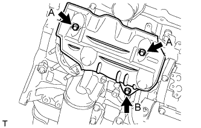
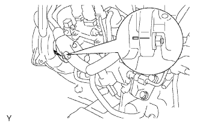
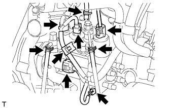
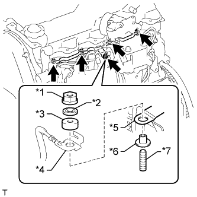
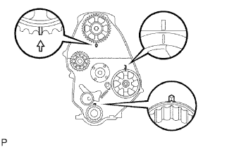
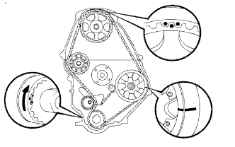
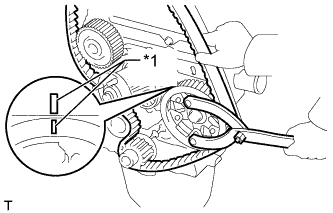
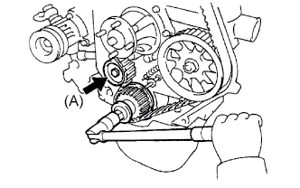
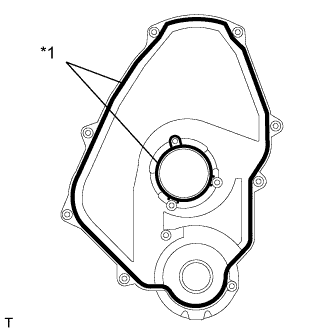

БЛОК ДВИГАТЕЛЯ > УСТАНОВКА |
| 1. INSTALL ENGINE OIL PRESSURE SWITCH ASSEMBLY |
Clean the threads of the oil pressure switch and apply adhesive to them.
Using a 24 mm deep socket wrench, install the oil pressure switch.
| 2. INSTALL OIL FILTER BRACKET SUB-ASSEMBLY |
Install a new gasket and the oil filter bracket with the 10 bolts and 2 nuts.
| *1 | Nut |
| 3. INSTALL EXHAUST MANIFOLD |
 |
Установите новую прокладку на головку блока цилиндров.
| *a | Метка внешней стороны |
 |
Установите выпускной коллектор и закрепите его 6 болтами и 2 новыми гайками. Равномерно, в несколько этапов затяните болты и гайки.
| *1 | Гайка |
| 4. INSTALL NO. 1 EXHAUST MANIFOLD HEAT INSULATOR |
|  |
Установите теплозащитный экран и закрепите его 3 болтами.
| 5. INSTALL VACUUM PUMP OIL OUTLET HOSE |
Install the vacuum pump oil outlet hose with the bolt and 2 new gaskets.
| 6. INSTALL UNION |
Clean the threads of the union and apply adhesive to them.
Install the union to the cylinder block.
| 7. INSTALL VACUUM PUMP OIL INLET HOSE |
 |
Connect the vacuum pump oil inlet hose with a new gasket and the union bolt.
| *1 | Stopper-bar |
| 8. INSTALL NO. 1 FRONT ENGINE MOUNTING BRACKET RH |
Install the engine mounting bracket with the 4 bolts.
| 9. INSTALL ENGINE OIL LEVEL DIPSTICK GUIDE |
Apply a light coat of engine oil to a new O-ring.
Install the O-ring to the dipstick guide.
Install the dipstick guide with the 2 bolts.
Install the dipstick.
| 10. INSTALL NO. 1 FRONT ENGINE MOUNTING BRACKET LH |
Install the engine mounting bracket with the 4 bolts.
| 11. INSTALL PUMP BRACKET |
 |
Install the pump bracket with the 3 bolts.
| 12. INSTALL NO. 1 GENERATOR BRACKET |
Install the generator bracket with the 3 bolts.
| 13. INSTALL WATER BY-PASS HOSE UNION |
Clean the threads of the water by-pass hose union and apply adhesive to them.
Install the water by-pass hose union.
| 14. INSTALL INTAKE MANIFOLD |
 |
Install a new gasket to the cylinder head with the protrusion facing upward.
| *a | Protrusion |
| *b | Upward |
Install the intake manifold with the 6 bolts and 2 nuts. Uniformly tighten the bolts and nuts in several steps.
| *1 | Nut |
Install the wire harness bracket with the bolt.
| 15. INSTALL WATER OUTLET HOUSING |
Install a new gasket to the cylinder head.
Install the outlet hosing with the 3 bolts
| 16. INSTALL ENGINE COOLANT TEMPERATURE SENSOR |
Install a new gasket and the engine coolant temperature sensor with the bolt.
Connect the engine coolant temperature sensor connector.
| 17. INSTALL CRANKSHAFT POSITION SENSOR |
Apply a light coat of engine oil to the O-ring of the crankshaft position sensor.
Install the crankshaft position sensor with the bolt.
Connect the crankshaft position sensor connector.
| 18. INSTALL INJECTION PUMP ASSEMBLY |
Temporarily install the injection pump to the timing gear case with the 2 nuts.
Temporarily install the injection pump stay to the injection pump rear end with the 3 bolts.
|  |
Rotate the pump body to align the marks on the pump flange and timing gear case.
Tighten the 2 nuts.
Tighten the 3 bolts.
|  |
Connect the 3 fuel hoses.
Connect the 5 connectors and attach the wire harness clamp.
| 19. INSTALL INJECTION PUMP DRIVE PULLEY |
 |
Using SST, install the injection pump drive pulley with the nut.
| 20. INSTALL GLOW PLUG ASSEMBLY |
Using a 12 mm deep socket wrench, install the 4 glow plugs.
| 21. INSTALL NOZZLE HOLDER & NOZZLE SET |
 |
Install 4 new injection nozzle seat gaskets and the 4 injection nozzle seats to the injection nozzle holes of the cylinder head.
Using SST, install the 4 nozzle holder and nozzle sets.
| 22. INSTALL NOZZLE LEAKAGE PIPE ASSEMBLY |
Install 4 new ring packing washers and the leakage pipe with the 4 nuts.
Connect the fuel hose to the leakage pipe.
| 23. INSTALL NO. 1 GLOW PLUG CONNECTOR |
Install the No. 1 glow plug resistor insulator and No. 1 glow plug connector.
|  |
Install the glow plug connector with the 4 nuts. Uniformly tighten the nuts.
| *1 | Nut |
| *2 | Washer |
| *3 | No. 2 Glow Plug Resistor Insulator |
| *4 | Engine Wire |
| *5 | No. 1 Glow Plug Connector |
| *6 | No. 1 Glow Plug Resistor Insulator |
| *7 | Bolt |
Install the 4 screw grommets.
Connect the engine wire and install the No. 2 glow plug resistor insulator and washer with the bolt.
| 24. INSTALL INJECTION PIPE SET |
Install the 2 lower clamps to the intake manifold.
 |
Install the 4 injection pipes.
| *a | for Injection Nozzle Side |
| *b | for Injection Pump Side |
Install the 2 upper pipe clamps with the 2 nuts.
| 25. INSTALL DIESEL THROTTLE BODY |
Install a new gasket and the diesel throttle body.
Connect the throttle control motor connector.
Install the bracket with the 2 bolts.
Connect the throttle open switch connector.
| 26. INSTALL INTAKE FLANGE |
Install a new gasket and the intake flange with the 3 nuts.
Connect the manifold absolute pressure sensor connector.
Install the heater hose bracket with the bolt.
Connect the PCV hose.
| 27. INSTALL CRANKSHAFT TIMING PULLEY |
 |
Align the key groove of the timing pulley with the pulley set key.
Using SST and a hammer, tap in the timing pulley with the flange side facing inward.
| *a | Inside |
| 28. SET NO. 1 CYLINDER TO TDC/COMPRESSION |
 |
Using the crankshaft pulley bolt, align the groove of the crankshaft pulley with the timing pointer by turning the crankshaft clockwise.
| *1 | Timing Mark |
 | Turn |
|  |
Set the timing and drive pulleys at each position.
| 29. INSTALL TIMING BELT |
|  |
Remove any oil or water on each pulley, and keep them clean.
Install the timing belt to the crankshaft timing and timing belt idlers.
|  |
Using SST, slightly turn the injection pump drive pulley clockwise. Install the timing belt to the pulley, and align the timing marks of the drive pulley and timing belt case.
| *1 | Timing Mark |
 |
Using SST, slightly turn the camshaft timing pulley clockwise. Install the timing belt to the timing pulley, and align the timing marks of the timing pulley and timing belt case.
| *1 | Timing Mark |
Check that the timing belt has tension between the injection pump drive and camshaft timing pulleys.
Install the timing belt to the No. 1 timing belt idler.
|  |
Loosen the No. 1 timing belt idler bolt (A), and stretch the timing belt.
Slowly turn the crankshaft pulley.
Tighten the No. 1 timing belt idler bolt.
| 30. INSTALL TIMING BELT COVER |
|  |
Install 2 new gaskets to the timing belt cover.
| *1 | Gasket |
 |
Install the timing belt cover with the 11 bolts and washers.
| 31. INSTALL CRANKSHAFT PULLEY |
Align the key groove of the pulley with the pulley set key, and slide the pulley onto the crankshaft to install it.
 |
Using SST, install the pulley bolt.
| *a | Turn |
| *b | Hold |
| 32. INSTALL NO. 1 COMPRESSOR MOUNTING BRACKET |
 |
Install the No. 1 compressor mounting bracket with the 4 bolts.
| 33. INSTALL ENGINE WIRE |